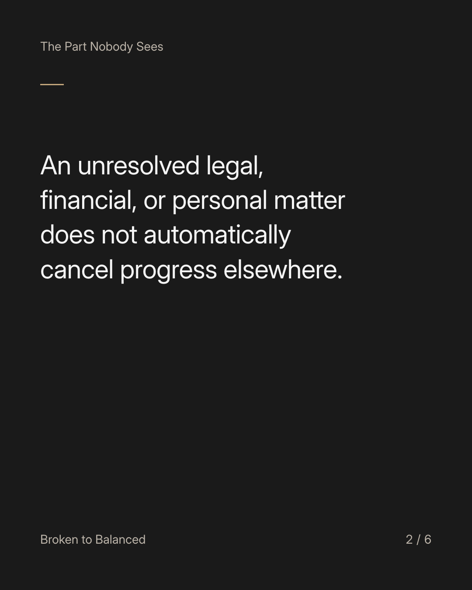
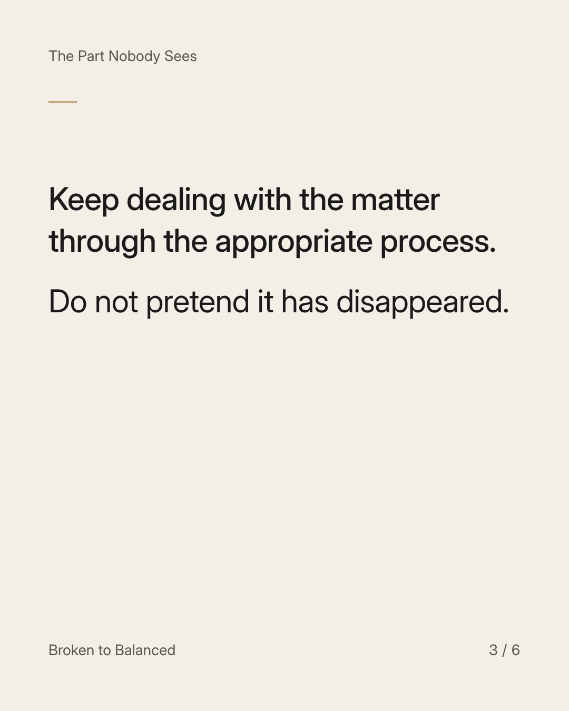
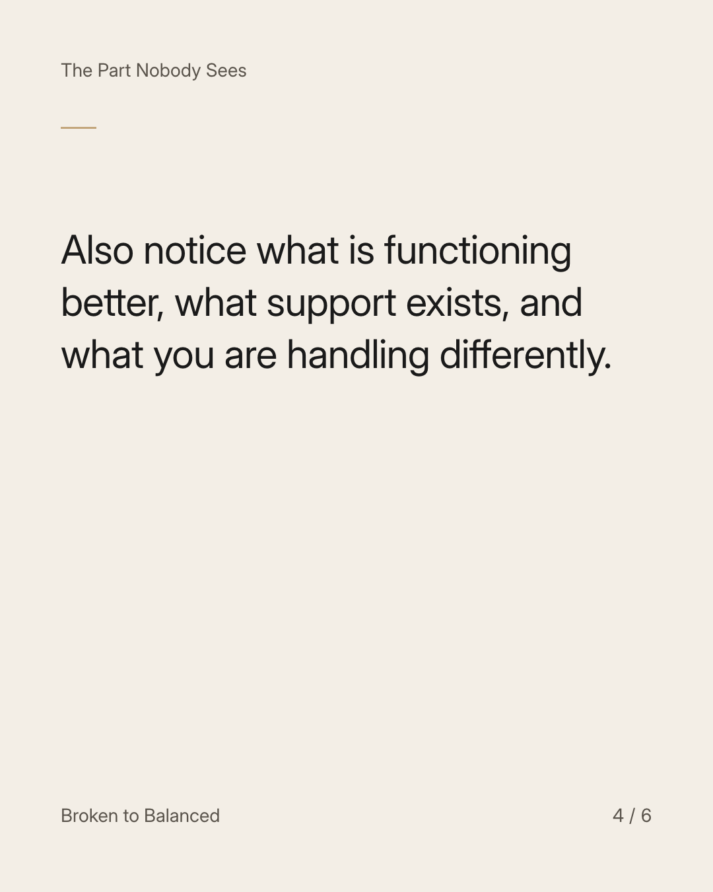
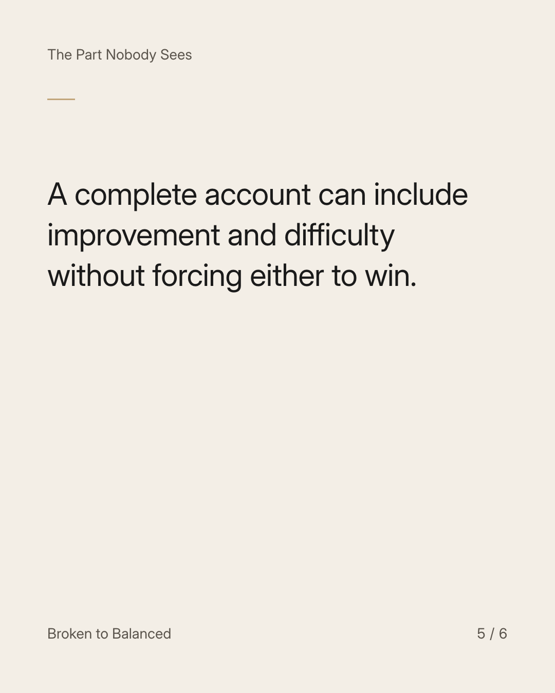
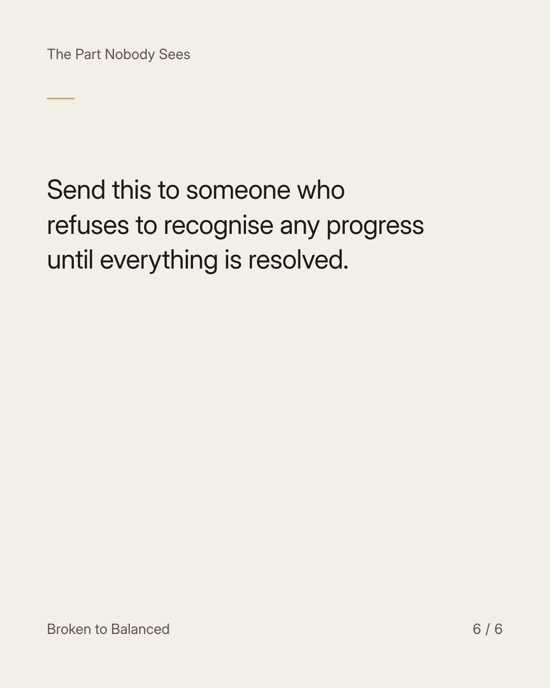

Exact text and accessibility text
You can be building well and still have an unfinished problem.
Slide 1 of 6. You can be building well and still have an unfinished problem.


Exact text and accessibility text
An unresolved legal, financial, or personal matter does not automatically cancel progress elsewhere.
Slide 2 of 6. An unresolved legal, financial, or personal matter does not automatically cancel progress elsewhere.


Exact text and accessibility text
Keep dealing with the matter through the appropriate process. Do not pretend it has disappeared.
Slide 3 of 6. Keep dealing with the matter through the appropriate process. Do not pretend it has disappeared.


Exact text and accessibility text
Also notice what is functioning better, what support exists, and what you are handling differently.
Slide 4 of 6. Also notice what is functioning better, what support exists, and what you are handling differently.


Exact text and accessibility text
A complete account can include improvement and difficulty without forcing either to win.
Slide 5 of 6. A complete account can include improvement and difficulty without forcing either to win.


Exact text and accessibility text
Send this to someone who refuses to recognise any progress until everything is resolved.
Slide 6 of 6. Send this to someone who refuses to recognise any progress until everything is resolved.
Exact caption
Plain-text fallback: select and copy the caption.